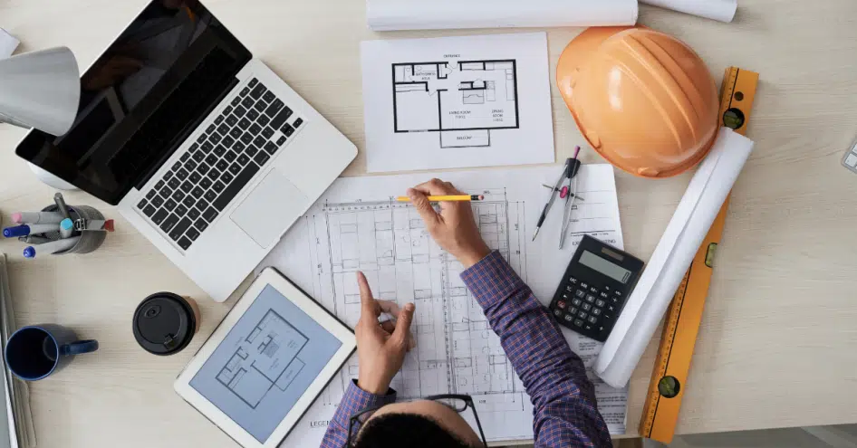

Chi Siamo
Studio Capoferri è una realtà tecnica indipendente nata dalla passione per l'edilizia in ogni sua forma e sfaccettatura. Con una solida esperienza maturata sul campo, affianchiamo imprese, architetti e studi tecnici per realizzare soluzioni strutturali affidabili, innovative e sempre conformi alle normative.
La nostra metodologia si basa su precisione, efficienza e cura del dettaglio. Crediamo nella collaborazione come chiave del successo progettuale, integrando competenze multidisciplinari per affrontare ogni sfida strutturale con approccio pratico e personalizzato.
Dal piccolo intervento locale ai grandi impianti industriali, mettiamo la stessa dedizione per garantire qualità e sicurezza in ogni progetto.
